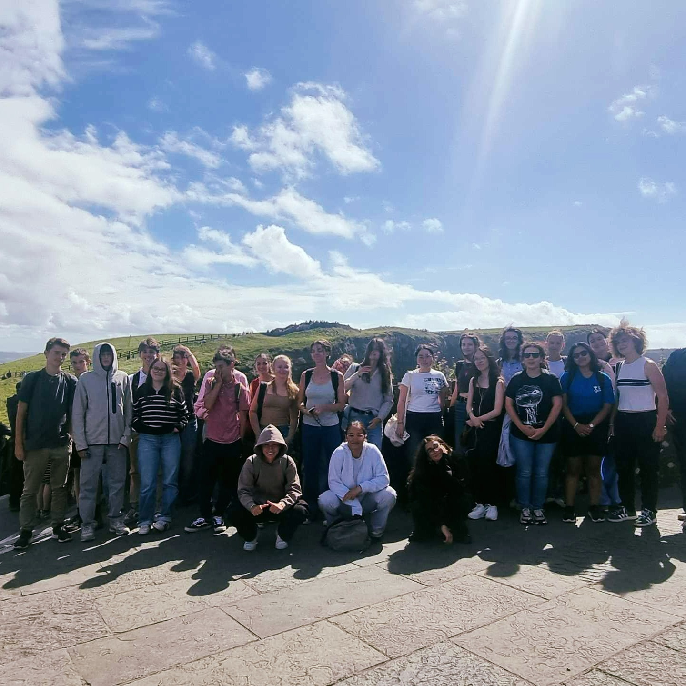
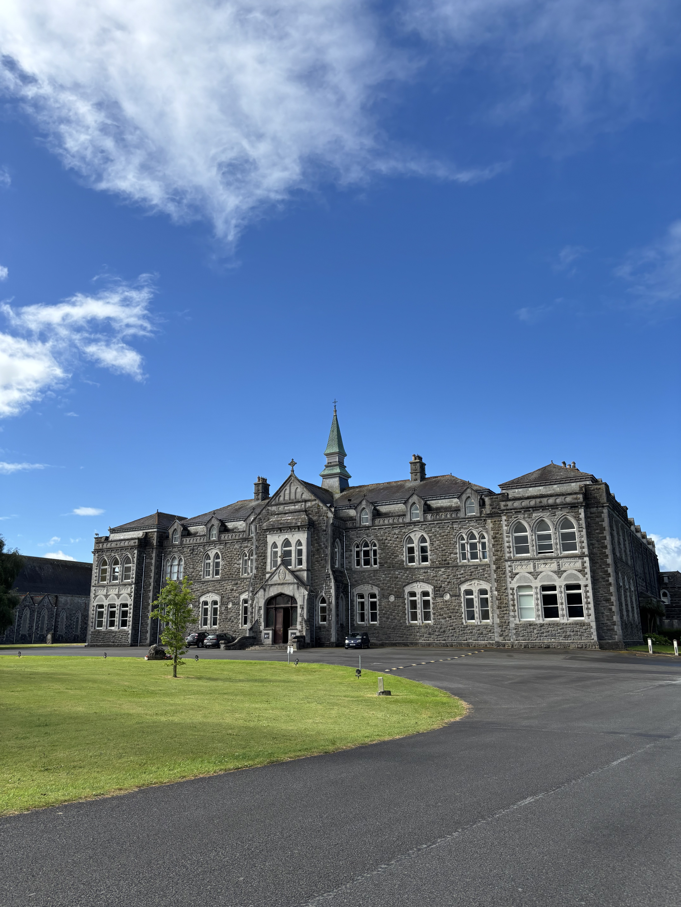
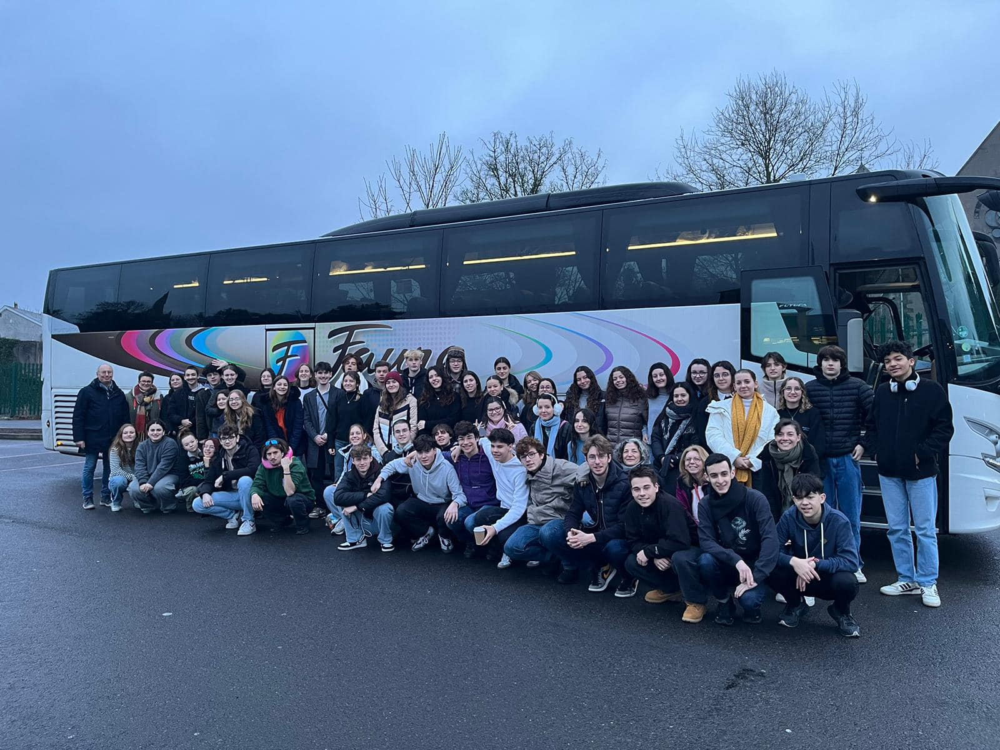
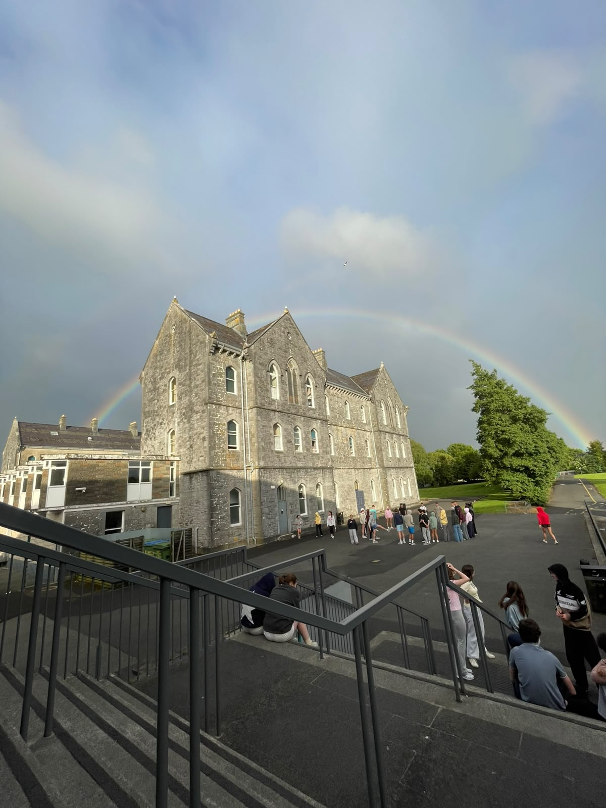

01
Mini stays
Short, structured visits that make the most of a few days: language, culture, activities and a clear rhythm for your group.
See a mini stay example ↓Local hosts, English practice, heritage, sport, music and time outside, shaped into a clear programme for your group.
Plan a programme ↗Short, structured visits that make the most of a few days: language, culture, activities and a clear rhythm for your group.
See a mini stay example ↓
More time for deeper language practice, local connections and a wider itinerary across Ireland.
See a longer stay example ↓
Pair cultural discovery with purposeful classroom sessions, conversation practice and confidence-building activities.
See English options ↗
Thoughtful matching and clear standards help every student feel welcomed, supported and safe.
Ask about hosting ↗Sample programmes
Choose a centre and a length of stay to explore the kind of rhythm Corrib Educate can build: arrival, discovery, local connection and a final day to remember.

A coastal base for Connemara, the Cliffs of Moher, the Aran Islands and Galway city.
Your group, your rhythm